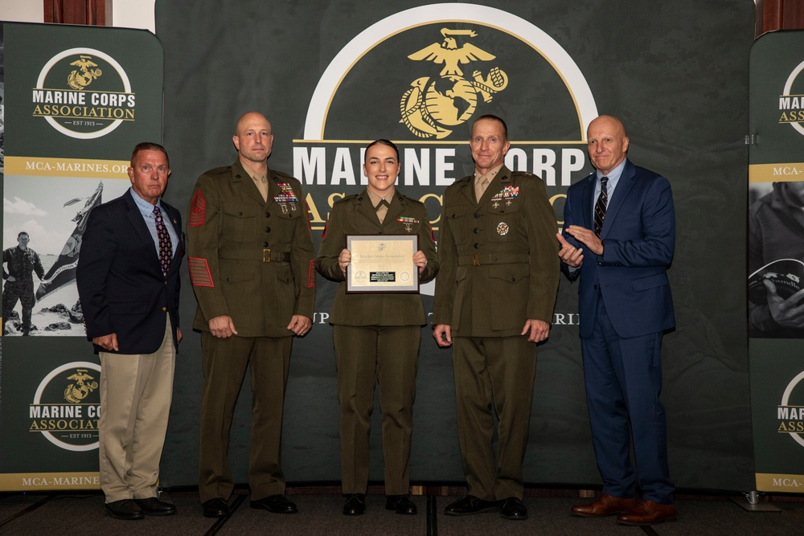
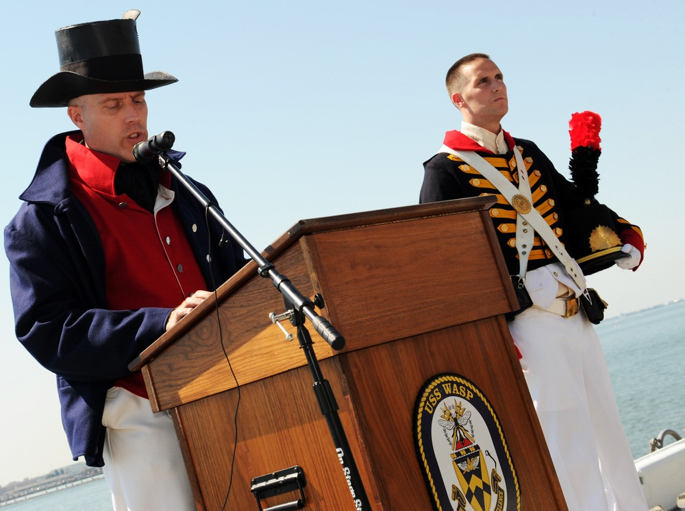
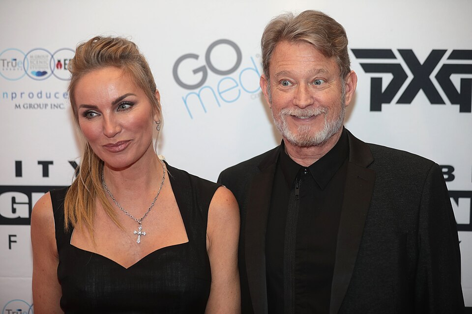
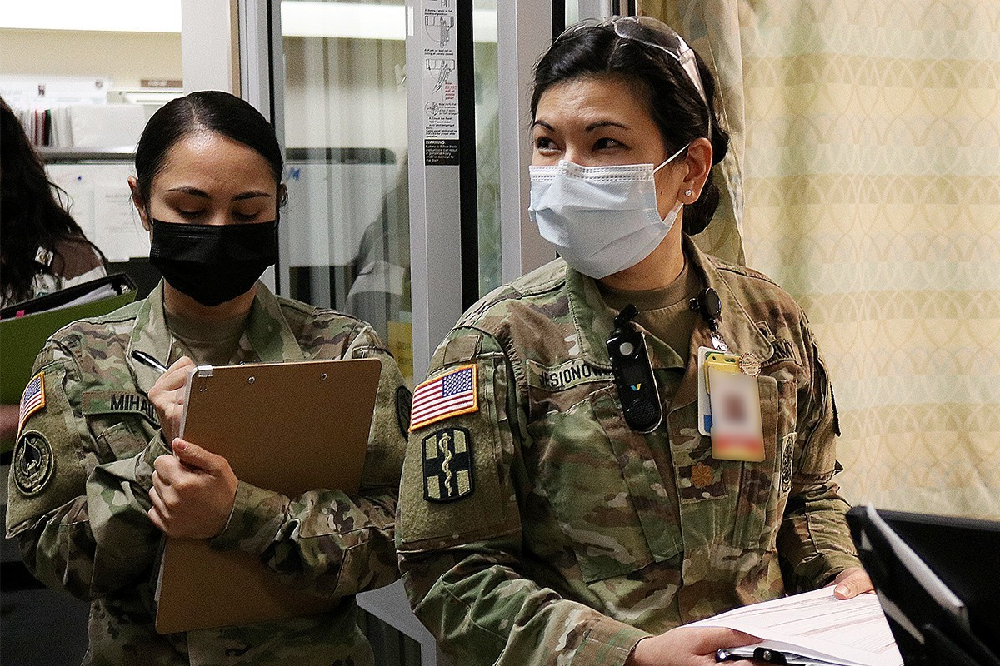
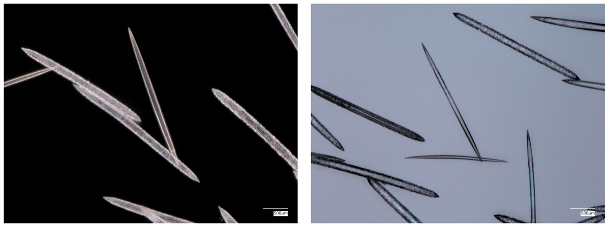

Veterinary medicine · Minnesota, United States
Adam Jesionowski
A veterinarian who treats small and large animals at Appleton and Dawson veterinary clinics.
Jesionowski · Jesionowska
If you carry either spelling, or the name appears in your family, you’re welcome here. One place from a family story is enough to start a conversation.

The name out in the world
Meet people who carry the name Jesionowski or Jesionowska, including in compound surnames. Each profile links to sources for their public work and to professional accounts where available. Share your own story and links to help the directory grow.
Veterinary medicine · Minnesota, United States
A veterinarian who treats small and large animals at Appleton and Dawson veterinary clinics.
Firmware engineering · Texas, United States
Works on firmware at Google. He co-presented Springbok, an open-source processor project for machine learning, at a 2022 RISC-V meeting.
Technology sales · Texas, United States
His professional profile lists territory account management at Dell Technologies in the Austin area.
Production planning · Stargard, Poland
His professional profile lists production planning at EcoReadyBath, including coordinating schedules with production, logistics, and warehouse teams.
Online retail · Szczecin, Poland
Polish company records list him as board president of NiceDeal.eu, a company registered for online retail.
Cosmetology · Poznań, Poland
Runs Agata Jesionowska Kosmetologia Estetyczna, a studio in Poznań that offers cosmetic skin care.
Law · Toruń, Poland
Registered as a legal adviser (radca prawny) with the Toruń regional chamber.
Engineering and software development · Texas, United States
Her professional profile lists engineering technician work at Applied Materials in Austin. It also describes building a scheduling app and co-developing a financial management tool for international students as a capstone project.
Spatial planning · Kosakowo, Poland
Works in spatial planning for the municipality of Kosakowo. She represented the municipality on a working group about the social and recreational role of forests near the Tricity area.
Trail and obstacle racing · Poland
Competes in trail and obstacle races. Her public results include the 2026 Cross Kobiet in Szczecinek and a top-five women’s finish in a six-kilometer Independence Day race.
Research administration · Łódź, Poland
Supports research administration in the Faculty of Chemistry at the University of Łódź. The university recognized her among its staff honorees at its 81st anniversary in 2026.
Technical support · Pennsylvania, United States
His professional profile describes computer and printer support for UPMC through All Lines Technology.
Psychiatry · Poland
A psychiatrist listed by Warszawska Klinika. His professional profile also lists work in child and adolescent psychiatry.
Medical physics · Austria
Works in particle therapy research. She co-authored a 2026 conference contribution on planning proton therapy for eye tumors.
Technical education · Kartuzy, Poland
The Technical School Complex in Kartuzy lists her among its teachers and names her as a class adviser for the 2025–26 school year.
Physical education · Włocławek, Poland
Teaches physical education at School Complex No. 11 in Włocławek. The school also lists her as a class adviser.
Financial analysis · Wrocław, Poland
Her professional profile lists financial analysis at LHH in the Wrocław area.
Industrial safety · Grand Est, France
A health and safety technician at Continental. She took part in a school careers event where women in industry spoke with students about technical professions.
Psychology and education · Warsaw, Poland
A psychologist who runs the Tymczasem practice. A regional teacher-training centre listed her as the instructor for a 2026 workshop on supporting neurodivergent students.
Medicine and protein research · United States
Her professional profile describes medical studies and earlier protein biology research at Thermo Fisher Scientific. The University of Nebraska–Lincoln named her a Student Impact Awards nominee for her work with Dance Marathon.
Education and dance · Chicago, United States
Coordinates the Middle Years Programme at Farragut Career Academy. Chicago Public Schools named her a Golden Apple finalist in 2022 for her work teaching English and dance at Senn High School.
Microbiology · New York, United States
A laboratory director whose published research includes a study of how a bacterial surface protein affects survival in treated root canals.
Investment banking · Illinois, United States
His professional profile lists investment banking at Deutsche Bank in Chicago, where he describes moving from vice president to director in 2025.
Psychology · Otwock, Poland
Medilife lists her as a psychologist on its adult mental health team in Otwock.
Child development services · Pennsylvania, United States
Her professional profile lists child development work at The Bradley Center, where she supports children through daily activities.
Forest conservation and education · Bierzwnik, Poland
A senior specialist in Poland’s State Forests. The Bierzwnik Forest District lists her responsibilities in nature conservation, tourism, education, and procurement.
Research partnerships · Pittsburgh, United States
Helps engineering faculty at Carnegie Mellon University find research partners and funding. Her earlier work helped university teams bring inventions to market.
Voice acting · Poland
Recorded Polish voice-overs for radio and television advertising. PolscyLektorzy hosts samples of her work and named her among its featured voice artists in 2022.
Hairdressing · Toruń, Poland
Runs SHINE Studio Fryzur, a hair salon in Toruń. The studio publishes its services and appointments on Booksy.
Financial services · Warsaw, Poland
An mFaktoring board member whose portfolio includes product development, finance, and compliance. She spoke at a SPIN event about using systems thinking to examine business processes.
Horticulture · New York, United States
Describes work in fine gardening at Poplar Point Studio and experience in organic vegetable farming, hops, and landscape maintenance.
Pediatric surgery · Kielce, Poland
Deputy head of the pediatric surgery, urology, and trauma clinic at the regional hospital in Kielce. The hospital has also quoted him in public guidance on preventing childhood injuries.
Building services · Konin, Poland
Runs Jesionowski Investment, a building services business in Konin. The local employment office lists the business in its 2026 report on internship agreements.
Warehouse systems · Bydgoszcz, Poland
Kaufland Polska profiled his work on warehouse management systems and his progression from coordinator to information systems department manager in Bydgoszcz.
Occupational health and safety · Poland
Stock Polska identifies him as the group health and safety coordinator who explained its workplace safety rules in a company video series.
Regional development · Toruń, Poland
Directs the department that administers European funds for Kujawy and Pomorze. The region’s 2026 funding resolution names her among its authorized signatories.
Accounting services · Opole region, Poland
Her registered business in Brzezina lists accounting, bookkeeping, and office administration among its services.
Video game environment art · Poland
Creates 3D game environments. His portfolio shows work on Glacier’s Edge for Outriders, and the credits for Outriders: Worldslayer list him as a senior environment artist.
Human resources · Cork, Ireland
Her professional profile lists regional human resources work at Amazon in Cork. Cork Athletics also records her finish in the 2023 Cobh 10 Mile Road Race.
Talent representation · Poland
CHILI Collective lists her on its team for both its artists and models rosters.
Intensive care nursing · Gorzewo, Poland
Arion Med lists her as the coordinating nurse for its anaesthesiology and intensive care department.
Production billing · Wyszków, Poland
Her professional profile lists production billing and invoicing at Quad, including calculating charges from production estimates and customer price lists.
IT support · Ohio, United States
In a June 2026 update, he announced that he had joined PPG as a help desk analyst in its automotive refinish division.
Heritage conservation and philately · Malbork, Poland
A heritage conservator who worked at Malbork Castle and serves as vice president of the Pomorskie district of the Polish Philatelists’ Association. He has exhibited and judged stamp collections.
Career and technical education · New York, United States
Teaches business in Buffalo Public Schools. The Bennett High School alumni association names him in its account of the school’s work with student athletes.
Sales management · Pomerania, Poland
His professional profile describes a career in sales and marketing leadership, including work as sales director at Nanobud.
Football · Stargard, Poland
Plays for Kluczevia Stargard. The club’s November 2026 match report records him coming on in the second half of its win over Lech Poznań’s reserve team.
Primary education · Garbów, Poland
Has taught at the Maria Konopnicka Primary School in Garbów. Her posts on the school website describe classroom projects, including an international reading initiative.
Internal communications · Washington, United States
Her professional profile lists internal communications at Blue Origin and earlier work at Starbucks, SAP, and Boeing.
Solar business development · Colorado, United States
His professional profile lists business development at SolarReviews in Denver.
Flight software · Colorado, United States
A lead flight software engineer at Albedo. His professional profile describes work in embedded systems.
Food service · United States
His professional profile lists executive chef work at Compass Group USA in Colorado.
Photography · Orlando, United States
A freelance photographer who shared her work photographing University of Central Florida graduates in 2025.
Snocross and marine services · Michigan, United States
Raced snowmobiles with Snirt Racing. His professional profile lists parts and warranty management at Action Water Sports.
Business operations · North Carolina, United States
Her professional profile lists office management at Restoration Experts of NC, with a focus on scheduling and improving workflows.
Corporate finance · Ohio, United States
His professional profile lists financial analysis and internal audit at Dana Incorporated. The Northwest Hockey Conference also recognized him in its 2020–21 academic honors.
Primary education · Ardèche, France
Deputy academic director for primary education in Ardèche. The Grenoble academy lists him among its education contacts for pupils who have recently arrived in France.
Marine Corps administration · Okinawa, Japan
Served in administration with Marine Corps Installations Pacific. She received the command’s 2021 Marine of the Year award at a 2022 ceremony in Okinawa.

Instructional design · Florida, United States
Develops training courses at Workday, including payroll courses tailored to different countries. Her earlier work included language arts teaching in Nassau County, Florida.
Enterprise software · Illinois, United States
Her professional profile describes managing enterprise applications at PLZ and working with sales, shipping, finance, and customer service teams.
Filmmaking · Ohio, United States
Made the short film Nostalgia as a capstone for Ohio State’s moving-image production program. It screened at the Wexner Center for the Arts in the 2025 senior showcase.
Industrial equipment sales · Warsaw, Poland
A sales engineer at KANITECH. He published a preview of the company’s plastics-processing and automation exhibit at the 2026 PLASTPOL trade fair in Kielce.
Forest district information systems · Głusko, Poland
A senior specialist who administers the State Forests computer network for the Głusko district and edits its public information bulletin.
Industrial services · Warsaw, Poland
Polish company records list him as board president of DMP, a Warsaw business registered for machine repair and maintenance.
Educational support · Tinley Park, Illinois, United States
A paraeducator on the educational support team at Prairie View Middle School.
Medical administration · Poland
A medical receptionist on the team at RODAMED, a diagnostic imaging and specialist care centre.
Football · Lipno, Poland
Has played for Mień Lipno in regional football. Match records name him in a September 2026 fixture against LTP Lubanie, and the municipality credited him in a local tournament in 2018.
Tourist accommodation · Kudowa-Zdrój, Poland
His registered business in Kudowa-Zdrój lists short-stay tourist accommodation as its main activity.
Game design and quality assurance · Poland
Credited for game design and quality assurance on Woodland Games’ 2024 release Autopsy Simulator.
Urban forestry · Bay Village, Ohio, United States
Serves on the Bay Village Tree Commission, which helps residents and city staff care for the community’s trees.
Hip-hop and rap
A recording artist whose releases include Znaki Stopu in 2024 and Malibu in 2025. The distributor credits both singles as licensed from the artist.
Document systems · Warsaw, Poland
His professional profile lists data management at Linklaters Warsaw, including administering its document management system and supporting its implementation.
Local education programs · Trąbki Wielkie, Poland
A 2025 municipal order names her as the education officer on the team delivering an EU-funded preschool project in Trąbki Wielkie.
Heating and cooling · Illinois, United States
Co-owns and operates Elite Heating and Cooling in Hampshire, Illinois.
Credit-union technology · United States
A regional sales representative for CU*Answers, a credit-union technology cooperative. The company lists him as covering Michigan, Ohio, and Kentucky.
Tattoo services · Poland
Runs Jesion Art, a registered mobile tattoo studio.
Senior care · Illinois, United States
Her professional profile lists certified nursing assistant work at Oak Crest Retirement Center.
Public information · Miastko, Poland
The Miastko municipal social welfare centre names her as the author and editor of public information on its official bulletin.
Accounting services · Rydzyna, Poland
Runs JClassic, a bookkeeping and accounting business in Rydzyna.
Biology · Szczecin, Poland
A senior technician at the University of Szczecin’s Institute of Biology. She co-authored a 2021 conference abstract on meadowsweet extract and a colon cancer cell line.
Investment management · United States
A portfolio manager at Morgan Stanley Investment Management. The firm names him as one of the managers of its U.S. Short Duration and Limited Duration strategies.
Maritime safety · United States
A senior marine inspector with the U.S. Coast Guard’s Cruise Ship National Center of Expertise. His Coast Guard biography describes earlier work in vessel inspection and maritime safety.

School admissions · New Jersey, United States
Assistant director of admission at The Peddie School. She joined the office in 2024 and coordinates in-person and online admission events.
Counselling · England, United Kingdom
Practises person-centred counselling in the Southampton area. She is listed in the British Association for Counselling and Psychotherapy’s public directory.
Interior design · Kraków, Poland
Runs Pracownia Projektowa Freedom, an interior design studio. The studio’s portfolio includes residential interiors and commercial spaces.
Process automation · Łódź, Poland
Her professional profile lists work at Nordea monitoring robotic process automation.
Television and painting · Poland and United States
Appeared on Polish television as Eva Halina Rich, including on Żony Hollywood and Agent–Gwiazdy. TVN also featured her work as a painter.

Commercial courts · Poznań, Poland
A judge at the Regional Court in Poznań. The court lists her in its commercial appeals division and names her as the presiding judge on a March 2026 commercial docket.
Professional training · Poland
A training organization specialist at Conlea, which runs professional development programs for technology managers and teams.
Bilingual education · Warsaw, Poland
School director and Polish-language teacher at Vancouver Schools, a Polish–English primary school in Warsaw.
Radiology research · Lausanne, Switzerland
Worked with the radiology department at Lausanne University Hospital. He led a 2026 paper introducing an open chest CT dataset covering five common conditions.
Industrial automation · Legnica, Poland
His professional profile lists research and development automation work at Eckert Cutting Poland, a manufacturer of industrial cutting machines.
Event production · Poland
Works in administration and marketing at Fenix Art, a production company that creates architectural lighting and stages light festivals.
Energy research · United States
Co-authored a review of nitrogen oxide emissions from gas turbines through work at the U.S. National Energy Technology Laboratory. The lab also credits him on reports about solid oxide fuel cells.
Facilities maintenance · Illinois, United States
His professional profile describes maintaining a manufacturing and distribution facility, including upgrades to lighting, controls, and equipment charging.
Farm hospitality · Lower Silesia, Poland
The Lower Silesian agricultural advisory center lists her at Jesionówka, a farm guesthouse in the Śnieżnik mountains.
Cooperative governance · Wejherowo, Poland
Polish company records list her on the supervisory board of the Samopomoc Chłopska cooperative in Wejherowo.
Football development · Wrocław, Poland
Works with Fundacja Akademia Piłkarska football in Wrocław. The foundation’s regional sports proposal names him in connection with its football program.
Industrial maintenance · Włocławek, Poland
His professional profile describes production support and maintenance engineering at ANWIL in Włocławek.
Road maintenance · West Pomerania, Poland
Runs Usługi Zimowe, which appears in procurement results for winter road maintenance in Szczecinek County and Borne Sulinowo.
Dentistry · Ślesin, Poland
Listed in Polish healthcare records as a dentist in Ślesin.
Reproductive medicine · New York, United States
A physician listed by Mount Sinai in obstetrics, gynecology, and reproductive science. She founded Manhattan Reproductive Medicine in 2001.
Nonprofit leadership · Warsaw, Poland
Polish association records list her as president of the Warsaw chapter of Stowarzyszenie Transplantacji Serca, an association for heart transplant recipients.
Construction management · Łódź, Poland
Polish business registry records list him on the management board of Jesion Inwestycje pod Klucz, a company that works on interior finishing projects.
Building finishes · Masovia, Poland
Runs a business in Stare Bosewo registered for building finishing work, including painting and glazing.
Insurance brokerage · Canada
Her professional profile lists insurance brokerage at Allwest Insurance.
Interpreting and translation · United States
A Russian-language court and conference interpreter. Her work includes simultaneous interpreting for international exchanges and developing training materials for interpreters.
Museum exhibitions · Warsaw, Poland
The Polish History Museum credits her on the coordination team for its Rzeczpospolita Powstańcza exhibition and on the team for Łukaszowcy. Wielki powrót.
Spa and wellness · Łódź region, Poland
Runs CliniqThermale in Wartkowice. Her professional profile lists the business and includes her posts about spa management and wellness.
Algae research · Łódź, Poland
Works in algology and mycology at the University of Łódź. She co-authored a study of how algae first take hold on building materials and what they do to those surfaces.
Primary education and theatre · Turek, Poland
An early-years teacher at Primary School No. 1 in Turek. Local coverage credits her as one of the artistic supervisors of the school’s Szpilka theatre group.
Manufacturing systems · Poland
Her professional profile lists operating the MFG/PRO manufacturing software system at Sonoco.
Competitive cycling · Poland
Races with Garaż MTB Team. Polish Cycling Federation results list him at the 2025 amateur gravel championships, and he competed at the 2026 Lang Team race in Bytów.
Wedding events · Wisconsin, United States
A wedding sales manager at Lake Lawn Resort. Her work includes helping couples plan events at the resort and meeting with guests at its wedding open house.
Hospitality writing · United Kingdom
Writes about leadership in professional kitchens. In a 2024 post he discussed how kitchen leaders can support mental health at work.
Civic technology · United States
Founded Election.org, a civic technology project that makes public election records easier to explore. He also co-founded WeMotions, which builds tools for group discussion.
Mathematics education · Piastów, Poland
Teaches mathematics at Primary School No. 5 in Piastów.
Beach soccer · Łódź, Poland
Represented Poland in beach soccer at the 2023 European Games and played for KP Łódź on its 2026 Polish championship squad.
Winter swimming · Pomerania, Poland
Won breaststroke relay gold with Poland and individual 100-metre breaststroke bronze at the 2026 winter swimming world championships in Finland. He also raced the 100-metre breaststroke at the 2026 Gdynia Winter Swimming Cup.
Forestry contracting · Warmia and Masuria, Poland
Runs Zakład Usług Leśnych. A 2026 award notice lists his business among the contractors selected for forestry work in Bredynki by the Mrągowo Forest District.
Product quality engineering · Washington, United States
His professional profile describes leading customer satisfaction and product quality work, including warranty forecasting and manufacturing process improvements.
Manufacturing and translation · Poland
His professional profile describes earlier manufacturing and sales work, including at medical equipment manufacturer Mifam, and later work in English translation and small business services.
Photography · Idaho, United States
His professional profile describes freelance photography and photo editing in the Nampa area, with experience in studio lighting and digital printing.
Telecommunications · Warsaw, Poland
His professional profile lists digital customer experience project management at Orange Polska. He also describes working on tools that support frontline sales teams.
Restaurant hospitality · Gdańsk, Poland
Heads service at ARCO by Paco Pérez. The restaurant’s biography describes his work presenting dishes to guests and his Level 2 qualification from the Wine & Spirit Education Trust.
Forestry · Idzików, Poland
Poland’s State Forests lists him as the forester for Idzików in the Międzylesie Forest District.
Tool retail · Kujawy, Poland
Runs COM-BIT, the business behind X66, a retailer of power tools and accessories in the Złotniki Kujawskie area.
Road freight · Warsaw, Poland
His professional profile describes road freight sales and a career at Hellmann. Polish business records list a freight forwarding and sales business in his name.
Rail communications · Berlin, Germany
Her professional profile describes communications and stakeholder work at DB InfraGO, including work on the Digitale Schiene Deutschland rail modernization program.
Beverage distribution · Texas, United States
Her professional profile lists retail partnerships and key account management at Reyes Beverage Group in Austin.
Tree care · Lower Silesia, Poland
Business listings identify him as the proprietor of a service specializing in tree care and removal.
Nurse anesthesia · Chicago, United States
A certified registered nurse anesthetist listed by Lurie Children’s Hospital. She completed its advanced pediatric anesthesia fellowship in 2024.
Real estate · Haverhill, Massachusetts, United States
A real estate agent whose Zillow and LinkedIn profiles both list RE/MAX Main Street. His public profile describes work with single-family homes, multifamily properties, and condominiums.
Architecture photography · Gdynia, Poland
Photographs buildings and urban landscapes. Gdynia’s architecture festival featured her Archi Liverpool exhibition and hosts a gallery of her work.
Secondary education · Warsaw, Poland
Teaches biology at Tadeusz Czacki High School in Warsaw. The school’s faculty records also list education for safety among her teaching subjects.
Road freight · Bobolice, Poland
Runs Jesion-Trans, a road freight business listed by the municipality of Bobolice. Poland’s national roads agency also lists it as a road haulage subcontractor.
Game concept art · Poland
Her professional profile lists concept art at People Can Fly. Her Behance portfolio includes an isometric warehouse and character studies.
Supply chain planning · Warsaw, Poland
Has led distribution and inventory planning for international supply chains. The 2024 Supply Chain Transformation Summit in Hamburg listed her as a speaker on inventory management.
Production planning · Grand Est, France
His professional profile lists planning management at Lorraine Profilés in Faulquemont.
Restaurant management · Michigan, United States
Manages Clyde’s Drive-In in Sault Ste. Marie. A 2026 local report covered the restaurant’s special winter opening for Valentine’s weekend.
Automotive finance · Michigan, United States
His professional profile describes leading finance and information technology at SMR Automotive Systems USA. The company’s 2020–21 financial statements also list him as an officer.
Public administration · Kielce, Poland
Świętokrzyskie regional records name her as a specialist in health oversight and as a contact for a 2026 procurement process concerning medical reviews for drivers.
School administration · Włocławek, Poland
The city of Włocławek’s 2025 public information bulletin lists her as deputy head of Primary School No. 12.
Accounting business · Gdańsk, Poland
Polish company records list her as board president of JK Expert, a Gdańsk firm registered for accounting and tax advisory services.
Civil service · England, United Kingdom
His professional profile describes leading service transformation in the UK Ministry of Justice and earlier work improving tax compliance operations at HM Revenue and Customs.
Film studies · New York, United States
A cinema lecturer emerita at Binghamton University. She programmed the Harpur Cinema film series, including the lineup for its fiftieth anniversary in 2015.
Municipal government · Parzęczew, Poland
Parzęczew lists him among the councillors sworn in at the first meeting of its 2024–29 municipal council term.
Legal services · Poland
The law firm Kancelaria Grobla21 lists her on its legal team.
Municipal water operations · Creutzwald, France
Works in public water operations in Creutzwald. A November 2026 municipal notice names him as operations manager for a project at the Garang water treatment station.
Forestry · Lower Silesia, Poland
Poland’s State Forests lists him as a deputy forester in the Międzylesie Forest District.
Technology customer success · Dublin, Ireland
A customer success manager at Salesforce. The company’s Trailblazer Community credits him as a presenter in a Sales Cloud webinar.
Physical therapy · Fort Worth, Texas, United States
The U.S. National Provider Identifier registry lists her as a physical therapist with a Doctor of Physical Therapy credential and a practice location in Fort Worth.
Public accounting · Poland
A statutory auditor since 2006 and president of Poland’s National Council of Statutory Auditors. His public work includes preparing the profession to review corporate sustainability reports.
Workplace technology · Warsaw, Poland
His professional profile lists workplace engineering in the UniCredit group’s Polish banking operations.
Industrial maintenance · Lower Silesia, Poland
His professional profile lists equipment maintenance at TechniSat Polska in Siemianice.
County government · Koszalin County, Poland
Chairs the Koszalin County Council for the 2024–2029 term. The municipality of Bobolice also credited him as a co-organizer of Iskra Kłanino’s twentieth anniversary.
Higher education projects · Poznań, Poland
Her professional profile lists strategic project management at Centrum Rozwoju Szkół Wyższych Merito in Poznań.
Product data · Łódź, Poland
Her professional profile describes work in business data analysis and digital specifications for teams in Europe and North America.
Law · Warsaw, Poland
A Warsaw Bar advocate. She appeared on BIZNES24 to discuss the suspension and deregistration of businesses in Poland.
Graphic design · Warsaw, Poland
The WIT Academy gallery included her work in a 2024 exhibition of collages by graphic design students.
Automotive business · Konin, Poland
Runs Auto Stasik in Konin. The local employment office lists the business among employers with an internship agreement in its 2026 report.
Home health care · Illinois, United States
Her professional profile describes home health and physical therapy aide work in the Chicago area.
Building construction · Wejherowo, Poland
Polish business records name her as a partner in Scopo, a Wejherowo firm registered for building construction and related engineering work.
Systems engineering · Alabama, United States
Her professional profile lists systems engineering at Astra Solutions in Huntsville, with work in software testing and verification.
Entrepreneurship · United States
Co-founded MySuperFoods and has spoken publicly about building communication and trust in family-run businesses.
Copywriting and communications · Georgia, United States
Their public professional profile describes copywriting and communications consulting, including work on content for a multilingual employee self-service portal.
Combustion engineering · Pennsylvania, United States
A Bloom Engineering contributor who co-authored a 2025 conference paper on converting steel reheating furnaces to reduce nitrogen oxide emissions.
Pharmacy · Pennsylvania, United States
A pharmacist listed in the U.S. National Provider Identifier registry. Her professional profile describes work in specialty and retail pharmacy.
Building services · Kujawy and Pomorze, Poland
Polish business records identify her as the proprietor of Taxclar, which lists building cleaning as its main activity.
Game programming and animation · England, United Kingdom
University Centre Leeds lists her among the 2023 graduates of its foundation degree in game programming. Her public portfolio describes her interest in technical animation for games.
Beauty services · Tczew, Poland
Runs Klaudia Jesionowska Beauty, a registered beauty services business in Tczew.
Hospitality technology · Poland
Co-founded NewReview, which builds tools for hospitality businesses to collect guest feedback. His company biography describes earlier work in financial analysis and risk.
Primary education · Stryków, Poland
Directs Primary School No. 1 in Stryków. The municipality announced in September 2026 that she would continue in the role.
Nail design · Bydgoszcz, Poland
Runs a nail styling studio in Bydgoszcz. Its public booking profile shows examples of the studio’s work.
Construction · Pomerania, Poland
A vice president of the management board at P&P, a construction and general contracting company based near Wejherowo.
Freight logistics · Warsaw, Poland
His professional profile lists carrier operations and capacity management at sennder.
Nursing education · Joliet, United States
Teaches nursing at Joliet Junior College. The college’s spring 2026 handbook lists her on the nursing faculty.
Data storage engineering · Arizona, United States
Leads strategy and architecture for IBM tape products. He wrote about tape storage for broadcasters and presented at the 2026 Future of Tape event.
Recurve archery · England, United Kingdom
Competes for Wilford Bowmen. Official results list her in the 2025 National Indoor Championships and the 2026 Archery GB National Tour.
Restaurant operations · Michigan, United States
Helped run Clyde’s Drive-In in Sault Ste. Marie and spoke to SooLeader about the restaurant’s history and taking over the business.
Romance writing · United States
Writes romance novels, including Alone Together and Mishaps and Mistletoe. Both are part of her When in West Virginia series.
Dental practice administration · Massachusetts, United States
Her professional profile lists revenue cycle management at Beacon Oral Specialists and business management at New England Oral Surgery Associates.
Business management · Poland
Polish business registry records list her as a vice president of Bastex.
Community dance · Świnoujście, Poland
Leads the Senioritki dance group at the University of the Third Age in Świnoujście. The municipal cultural centre has featured the group’s country dance performances at regional arts events for older adults.
Corporate communications · Warsaw, Poland
Directs the board office and external communications at FIGENE Capital, a renewable-energy company.
Law · Toruń, Poland
Registered as a legal adviser (radca prawny) with the Toruń regional chamber.
Business consulting · Poznań, Poland
Runs ASH Consulting in Poznań, as listed in the business register and on his professional profile.
Construction · Wartkowice, Poland
Runs R-B System, which has carried out municipal construction work. A 2026 public contract completion notice names the firm for an energy-efficiency renovation of the volunteer fire station in Janków.
Tabletop games · Poland
Works in tabletop game publishing and teaches game design. At the 2025 Nordcon convention, he ran role-playing sessions and spoke about adapting a game world for the tabletop.
Professional development · Warsaw, Poland
Works in learning and development at Dentons. He previously led marketing and business development for the firm in Poland, and Dentons credited him on the team behind a leadership development program.
Graphics software · Łódź, Poland
Develops Vulkan graphics drivers at AMD. The Khronos Group credits him as a contributor to an extension that lets shaders schedule additional GPU work.
Medical affairs · Warsaw, Poland
Works in medical affairs at Ferring Pharmaceuticals. He co-authored a 2023 study of ulcerative colitis treatment in Polish clinical practice.
Automotive product management · Berlin, Germany
A product manager whose work at 4Service included moving vehicle preparation and handovers from paper to a digital workflow.
Accounting services · Ząbki, Poland
Runs Magalia, an accounting practice in Ząbki. The practice website describes bookkeeping, payroll, and tax record services.
Talent development · United Kingdom
Works in human resources and talent development in advertising technology. The HR Vision London program featured her as a FreeWheel director on a panel about how company culture shapes teams.
Translation and interpreting · Alta, Norway
Norway’s business register lists her Norwegian–Polish language service as a sole proprietorship in translation and interpreting.
Community programs · Olsztyn, Poland
Leads the Tęczowa Świetlica community day centre in Olsztyn. A 2025 government report names her as its director, and the association that runs it lists her as its president.
Game development and visual effects · Warsaw, Poland
Works in game development and visual effects. Thing Trunk credits her as a level content creator on Book of Demons.
Social services · Świecie, Poland
The municipal social welfare centre identifies her as a senior social work specialist and coordinator in its March 2026 food assistance notice.
Primary education · Kruszyn, Poland
An early-years teacher at the primary school in Kruszyn. Gazeta Pomorska named her among the teachers recognized at Sicienko’s Education Day celebration.
Construction materials · Warmia and Masuria, Poland
Sales director at ECO-TER. He spoke with a regional business magazine about the company’s production of aggregates for concrete, asphalt, and road construction.
Installation project management · Illinois, United States
His professional profile lists installation project management at Renewal by Andersen in the Chicago area.
Legal operations · Barcelona, Spain
Her professional profile lists legal operations at CV Abogado, including preparing client guides and supporting documentation and filing procedures.
Corporate finance · Illinois, United States
A financial controller at WITTENSTEIN North America. The company recognized her among its long-serving employees.
Aikido · Włocławek, Poland
A first-dan practitioner and assistant instructor at the Włocławek Aikido Academy. She received a Polish Aikido Federation instructor licence in 2025.
Regional public administration · Toruń, Poland
A chief specialist in the Kujawy and Pomorze regional administration. A regional funding document names her as secretary of a project evaluation committee.
Industrial supplies · Łódź, Poland
A partner in Ferro-Met Jesionowscy, a supplier of metal goods, tools, and installation equipment. The company lists him on its team.
Mountain biking · Świecie, Poland
Competes with MTB Eldar Świecie. Timing records list his finishes at mountain bike races in Koronowo and Golub-Dobrzyń.
Municipal service · Dracut, Massachusetts, United States
Serves on the Town of Dracut’s Board of Assessors, which oversees local property valuations and hears assessment appeals.
Medical technology sales · Georgia, United States
His professional profile lists retirement in 2026 after working in regional sales for GE HealthCare’s point-of-care ultrasound systems.
Accounting services · Tarnów, Poland
Polish business registry records list her as president of Finrolling, an accounting services company in Tarnów.
Interior architecture · Poland
Founded MJ Atelier, an interior design studio that works on homes and commercial spaces and offers custom furniture.
Sports administration · Szczecin, Poland
Works in business administration for the football club Pogoń Szczecin. A September 2026 club news report names her as a senior administrative specialist on its business team.
Product demonstrations · Gdańsk, Poland
Her professional profile lists team leadership for Thermomix at Vorwerk Polska in Gdańsk.
Financial auditing · Warsaw, Poland
Her professional profile lists a director role at Meritum Biegli Rewidenci and work auditing financial statements.
Court finance · Zielona Góra, Poland
The District Court in Zielona Góra lists her as its chief accountant. She is also named in the court’s published financial statements for 2024.
Law · Gdańsk, Poland
A legal adviser (radca prawny) in Gdańsk. The Pawłowski Skromak firm lists him on its legal team, and his professional profile also lists an independent practice.
Food retail · Łódź, Poland
Owns Crudo Gusto, a shop specializing in Italian foods. In a Łódź city feature, he describes growing the business from a small retail kiosk.
IT operations · Gliwice, Poland
His professional profile lists senior IT administration at AIUT, with work in system monitoring and Python automation.
Medical device sales · Pennsylvania, United States
His professional profile lists key account management at Corza Medical and earlier medical device sales work at Integra LifeSciences.
E-commerce · Poland
Allegro listed her among its representatives for cross-border e-commerce at the 2023 K5 Future Retail Conference in Berlin.
Residential design consultation · Texas, United States
Her professional profile describes consulting with homebuyers in the Austin area on design selections and budgets.
Financial planning · Toledo, Ohio, United States
A financial advisor at Wells Fargo Advisors. His professional biography lists the Chartered Financial Consultant designation.
Interest-rate markets · New York, United States
CME Group lists him as a Bank of America representative for interest-rate futures. His professional profile uses the name Mike Jesionowski.
Financial regulation · New Hampshire, United States
His professional profile describes work in financial examination and regulatory compliance.
Investment services · United States
Her professional profile describes managing director experience at Charles Schwab. A 2026 filing with the U.S. Securities and Exchange Commission names her as an executive officer of a Forge Investments fund.
Automotive media · Poland
Hosts the Polish automotive channel Miłośnicy 4 Kółek and founded the M4K Garage workshop network.
Mathematics education · Wrocław, Poland
Teaches mathematical analysis at Wrocław University of Environmental and Life Sciences. The university’s catalogue lists him as an instructor for the 2026–27 academic year.
Business advisory · Łódź, Poland
Works in business advisory and professional networking. Grow4U lists him on its team, and his professional profile describes his work with entrepreneurs in Łódź.
Crop research · Poland
His professional profile describes coordinating Polish work for the European DIVERSICROP network, including mapping rye cultivation and analyzing crop trends.
Equipment leasing · Konin, Poland
His professional profile lists work as a leasing specialist at Alior Leasing in the Konin area.
Business administration · Tarnów, Poland
Polish company records list him as a commercial representative for Finrolling, an accounting services company in Tarnów.
Construction estimating · Colorado, United States
His professional profile describes program estimating and senior estimating work at MWH, which was acquired by Stantec.
Industrial robotics · Poland
His professional profile lists work as a junior robotics specialist at Amister, an industrial automation company.
Textile art · Zielona Góra, Poland
Weaves with the Penelopa textile arts group. Her work Oczekiwanie received a distinction at Poland’s 2024 national review of original textile art.
Pediatric otolaryngology · Warsaw, Poland
Works in pediatric ear, nose, and throat medicine at the Medical University of Warsaw. Her publications include research on recurrent laryngeal papillomatosis in children.
Civil service · Warsaw, Poland
Poland’s civil service bulletin records her selection for a specialist post at the Ministry of Development and Technology in 2025. It also records her selection for a senior specialist post at Statistics Poland in 2017.
Municipal finance · Ozorków, Poland
Serves as treasurer of the rural municipality of Ozorków. The Łódź regional audit office names her in its review of the municipality’s finances.
Construction operations · London, United Kingdom
Her professional profile lists construction operations at Stella Rossa Design and describes managing high-end residential projects.
Wellness project management · Paphos, Cyprus
Her professional profile lists project management at Total Body Transformation in Paphos.
Accounting · Poznań, Poland
Her professional profile lists accounting at Poczta Polska.
Plant science · Ontario, Canada
Worked with the University of Guelph’s plant-lipid research group. She co-authored a 2026 study mapping proteins between chloroplast membranes.
Nursing and nonprofit leadership · United States
A clinical nurse specialist and educator who led emergency nursing services at Madigan Army Medical Center. She co-founded The HeartSpace Collective, which builds peer support and programs for women veterans.

Public health · Pennsylvania, United States
Worked on a University of Pittsburgh student research team that mapped gaps in ambulance coverage across the United States.
Theatre · Katowice, Poland
Stage actor whose work includes Voltemand in the Silesian Theatre’s 2026 production of Tragedyjo Hamleta, Ksiyncia Dynymarku, performed in Silesian.
Libraries · Brzeźnica, Lubuskie, Poland
Directs the Brzeźnica municipal public library. The regional library’s 2026 directory also lists her as a book discussion group moderator.
Bridge engineering · Scotland, United Kingdom
A bridge engineer at Arup. Perth’s transport project team named her among the engineers who helped students design model cable-stayed bridges.
Road transport · Małopolska, Poland
Dun & Bradstreet lists DEJA, his business in the Krzeszowice area, in its road freight directory.
Software engineering · United States
His professional profile lists software engineering at Synapse Health and describes building web applications with Angular, C#, and SQL.
Economics and entrepreneurship · Poland
Earned a doctorate in economics and finance from the University of Gdańsk in 2025 for research on gender equality in employment. She co-founded NewReview, a company that helps hospitality businesses collect guest feedback.
Corporate governance · Warsaw, Poland
Polish business registry records list her as a member of Calmoria’s supervisory board in 2026.
Business management · Łódź, Poland
Business registry records list her on the management board of Jesion Consulting and name her as a commercial representative of Jesion Inwestycje pod Klucz.
SAP consulting · Poland
Co-founded SAPPORT, a consultancy focused on SAP logistics. His professional profile lists work as an SAP architect.
Book publishing · United States
Her professional profile lists international sales operations at Penguin Random House and earlier work in publishing at HarperCollins.
Public administration and law · Bydgoszcz, Poland
Poland’s civil service recruitment bulletin records her selection as a senior inspector for the General Directorate for National Roads and Motorways. Her professional profile describes legal work in that role.
Football · Kudowa-Zdrój, Poland
Plays for Czermna Kudowa-Zdrój. Regional league records list him in the 2026–27 season, and Piasek Potworów’s published match records also document his earlier appearances for the club.
Passenger transport · Svolvær, Norway
Norway’s business register lists him as the proprietor of PKJ Taxi Jesionowski, a passenger transport business in Svolvær.
Nonprofit leadership · Częstochowa, Poland
A 2026 association register lists her as vice president of Stowarzyszenie Wzajemnej Pomocy Agape, a mutual aid organization in Częstochowa.
City design · Gdańsk, Poland
Co-authored a 2026 study of how paths, public spaces, and amenities along Gdańsk’s coast serve older people.
Software project management · Wrocław, Poland
Her professional profile lists associate project management at QAD in Wrocław.
Insurance brokerage administration · Bydgoszcz, Poland
Her professional profile lists work as an assistant to the management board at M Broker Ubezpieczeniowy in Bydgoszcz.
Language instruction · Bydgoszcz, Poland
Runs English 4 You, a Bydgoszcz business registered for foreign language instruction.
Cardiology · Zielona Góra, Poland
Heads the clinical cardiology department at University Hospital in Zielona Góra. The hospital recognized him at its 80th-anniversary celebration in 2025.
Construction and renovation · Szczytno, Poland
Runs a construction business in Szczytno. Poland’s public contracts register lists its 2026 renovation and painting work for School Complex No. 2, including the reading room and cafeteria.
Municipal broadband operations · Massachusetts, United States
The Town of South Hadley lists him as operations manager with its electric light department and municipal broadband service, FiberSpring.
Engineering program management · Massachusetts, United States
His professional profile lists engineering program management at Medtronic, including facility planning and coordinating engineering transfers.
Education and workforce development · Lüneburg, Germany
Works on the Lüneburg district’s education portal and local workforce development. She co-led a workforce session at the district’s 2025 education forum.
Language education · Koszalin area, Poland
An English teacher and sociologist. Nowa Konfederacja identifies him as the owner and teaching-methods lead at HiSchool and credits him on its education reform report.
Electrical design and automation · Toruń, Poland
His professional profile lists design and programming at Asta Engineering, including electrical documentation for automation projects.
Product management · Kujawy and Pomorze, Poland
His professional profile lists product management at Rotopino.pl, a retailer of tools and workshop equipment.
Boat and ship repair · Warmia and Masuria, Poland
Runs a business in Pogrodzie registered for boat and ship repair and maintenance.
Energy brokerage · Gdynia, Poland
Runs CRE Piotr Jesionowski, a Gdynia business registered for electricity and natural gas brokerage.
Software services · Słupsk, Poland
Runs WeCan in Słupsk. The business lists software programming as its main activity.
Health software · Poznań, Poland
Leads IC Solutions, which develops tools for digitizing patient paperwork. At Poland’s 2026 Health Market Forum he joined a panel on how hospital managers handle digital change.
Furniture manufacturing · Łódź region, Poland
Runs Jesion Meble in Ustronie. The business is registered for manufacturing kitchen, office, and shop furniture.
Road transport · Ireland
His professional profile lists commercial truck driving at O’Toole Transport in the Dublin area.
Municipal infrastructure · Ozorków, Poland
Works in the Ozorków municipality’s department for investment, infrastructure, and European funds. A 2025 Łódź metropolitan council resolution lists her as Ozorków’s representative on a sustainable urban mobility planning team.
Municipal government · Mrocza, Poland
Municipal secretary of Mrocza. In 2026 she chaired a committee reviewing proposals for municipal sports funding.
Fiction · United States
Wrote Don’t Tell Me It Don’t Mean Nuthin’, a novel about a combat medic during the Vietnam War.
Software engineering · Illinois, United States
His professional profile lists software engineering at Elite Electronic Engineering, an electronics testing company in the Chicago area.
Aerospace engineering · Alabama, United States
An aerospace systems engineer whose University of Alabama in Huntsville thesis applies sliding mode control to aerospace systems. His professional profile describes work in guidance, navigation, and control at Capstone Research.
Materials research · Poland
Contributed to research on how silica nanoparticles change the mechanical properties of light-cured resins. He is listed in the 2024 Solid Mechanics conference program and the AMBRA conference team.
Retail technology · Warsaw, Poland
His professional profile lists IT business relationship management at Grupa Żywiec. A supplier case study quotes him on rolling out a new system for retail price labels.
Backup systems · Ontario, Canada
His professional profile describes leading technical support for Avamar backup servers at Dell EMC, including troubleshooting Linux and storage hardware.
Business analytics · Utah, United States
His professional profile describes forecasting, reporting, and experimentation at Jesionowski Partners.
Photography · Virginia, United States
Artist and photography educator at Longwood University. In The Great North American Albumen Tour, she used a nineteenth-century photographic printing process to document a cross-country trip.
Solar energy education · Poland
Founded Akademia Fotowoltaiki, which publishes guides to solar power. In 2026 he wrote about using more of the electricity a home generates from its own panels.
Mortgage brokerage · Gdańsk, Poland
Credipass lists him as a financial specialist in Gdańsk. His employer biography describes work in mortgages, business financing, and leasing.
Public sector project management · England, United Kingdom
Her professional profile describes her career as a senior project manager at HM Revenue & Customs and lists her as retired.
Retail marketing · United States
Niven, a retail marketing and display design company, lists her as a senior account manager.
Heating equipment · Turek, Poland
Runs Semar in Turek. Heating equipment manufacturer Immergas lists the business as a distributor.
Independent retail · Oregon, United States
Co-founded gilt+gossamer, a boutique in Eugene. Eugene Magazine traced the shop’s move from downtown Eugene to Fifth Street Public Market.
Human resources · Pittsburgh, United States
A senior human resources director at UPMC. United Way of Southwestern Pennsylvania lists her in its leadership recognition publication.
AI education · Jacksonville, United States
Creates practical AI training through Jez Digital. His public video lessons show how to use AI tools for everyday work and creative projects.
Snowboard coaching · Michigan, United States
Head coach and operating partner of the American Snowboard Training Center’s Michigan program. The centre lists him on its 2026–27 coaching staff.
Snowboard coaching · Michigan, United States
His American Snowboard Training Center biography describes winning Michigan high school snowboard cross titles and going on to coach riders from school teams through professional competition.
Technology program management · Illinois, United States
Her professional profile describes work in technology project and program management, including a vice president role in global technology at JPMorgan Chase.
Water systems engineering · Illinois, United States
His professional profile lists water systems engineering and quality assurance at Argonne National Laboratory.
Journalism and regional culture · Olsztyn, Poland
A journalist and vice president of the Moda na Warmię i Mazury foundation, which promotes the region. Radio Olsztyn interviewed her for a program on postwar Olsztyn photography.
Chemical engineering · Poznań, Poland
A chemical engineering researcher and rector of Poznań University of Technology. Bydgoszcz University of Science and Technology awarded him an honorary doctorate in September 2026.
He co-authored a 2024 study of how sponges build their silica skeletons.

Adaptive sport · Łódź, Poland
Teaches physical education at Łódź University of Technology. She started a sports section for students with disabilities and coaches activities through its university sports club.
Polish-American community organizations · Ohio, United States
Has served as a national director for the Polish Roman Catholic Union of America. The organization has also documented his work with Polish folk dance schools.
Software engineering · Alabama, United States
Auburn University lists him in its 2022 commencement program. His public professional listing identifies work at Leidos in the Huntsville area.
Data governance · Washington, United States
Co-authored an IBM Redbooks guide on designing and running information governance programs for large data systems.
Electrical installations · Łapy, Poland
Runs Instals, an electrical installation business listed by Ampio in its network of smart-building showrooms and installers.
Software and user experience · United States
Writes about user experience research and designing interfaces for AI agents. His professional profile lists digital systems and product analysis at Continuum Therapy Partners.
Youth recreation · Colorado, United States
The YMCA of Metro Denver lists him among the site supervisors for the 2026 Duncan YMCA day camp in Arvada.
Cosmetology and fitness · Gdynia, Poland
A cosmetologist at Młodość Naturalnie. She previously worked as a personal trainer and spoke to Prestiż Trójmiasto about building sustainable exercise habits.
Industrial supplies · Łódź, Poland
Polish business registry records list her as a partner in Ferro-Met Jesionowscy, a supplier of metal goods and installation equipment.
Accounting and education philanthropy · Illinois, United States
Serves as treasurer of the Harvard Community Education Foundation, which supports students and educators in Harvard, Illinois. His professional profile lists accounting management at Summit Advisors Group.
Technology support · Georgia, United States
Received a Pi Kappa Phi Foundation scholarship as a Mercer University student. His professional profile lists client support at Custom Networks.
Social assistance services · Brodnica area, Poland
His business, Serce Dla Serca, is registered for social assistance services in the Brodnica area.
Customs and freight · Gdynia, Poland
Her professional profile lists work as a customs agent at SeaCargo in Gdynia.
Corporate leadership · Poland
An executive whose past roles include leading Gino Rossi and serving on the supervisory board of Protektor. Business registry records list him as a partner in Forecast.
Martial arts and coaching · Poland
A coach and mentor featured by SlimMeNatural. His team biography describes his competition experience in Brazilian jiu-jitsu and mixed martial arts.
Tree care · Kudowa-Zdrój, Poland
Runs Jesion, a tree-care business. His website documents work on tree pruning and removal, and the Bardo Śląskie Forest District named the business in a procurement result.
Business management · Bydgoszcz, Poland
Polish business registry records list him as president of R&W IT in Bydgoszcz.
Game art and animation · Massachusetts, United States
Fitchburg State’s game design team credits him as an artist, animator, and producer on Tile Heroes. He is also credited for character sprite art in Idol Showdown.
Municipal government · Kosów Lacki, Poland
Serves on the Kosów Lacki town and municipal council. The municipality lists him on its current council roster.
Poetry and adult education · Barcin, Poland
Poet and chair of the learners’ council at Barcin’s University of the Third Age. Her three poetry collections include Kwiaty odejdą z latem.
Media strategy · Warsaw, Poland
A media strategist whose public work includes Pro/Porcja and an earlier strategy director role at MediaCom. In the advertising trade press she has discussed how brands can follow through on public commitments.
Try a shorter name, a broader place, or a different kind of work.
The historical family tree tracks relationships documented in records.
The appearance of U.S. Department of War (DoW) visual information does not imply or constitute DoW endorsement.
An invitation
Share a few lines about yourself, a region or ancestral town, and any public profiles you’d like to include. The link opens a draft on GitHub. Posting requires a GitHub account and makes the introduction public. Tick the box in the draft if you’d like the site editors to consider adding it to the directory.
Napisz kilka słów o sobie. Możesz dodać region lub miejscowość związaną z historią Twojej rodziny oraz linki do własnych publicznych profili. Link otwiera szkic na GitHubie. Do publikacji potrzebne jest konto, a wpis będzie publiczny. Zaznacz pole w szkicu, jeśli chcesz, by redakcja rozważyła dodanie wpisu do katalogu.
Surname snapshots
The exact worldwide total is unknown. These published counts cover different years and populations. The directory also includes people with compound surnames.
Compare spellings, countries, and years in the Roots Atlas
Carry either spelling? Introduce yourself or share the invitation with someone who carries the name.
.jpg){kind=link}
.jpg){kind=link}